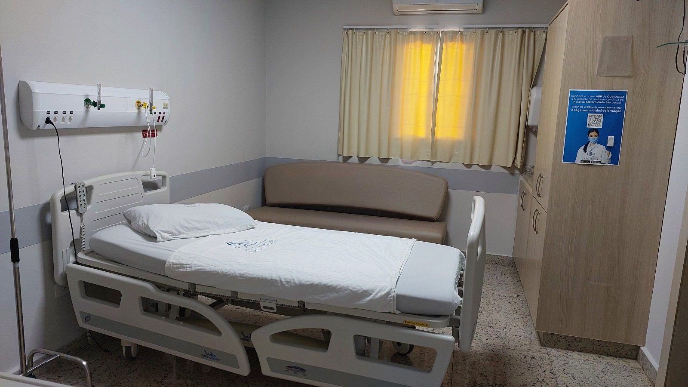

Tratamento para cálculo biliar complexo entra no Rol de cobertura obrigatória
Referência informativa · Fonte: ANS (abre em nova aba)

A Diretoria Colegiada da ANS aprovou, em 2 de outubro, a inclusão de um novo procedimento para o tratamento de cálculos biliares complexos no Rol de Procedimentos e Eventos em Saúde.
Qual procedimento foi incluído
A Diretoria Colegiada da ANS aprovou, em 2 de outubro, a inclusão da colangioscopia com litotripsia, a laser ou eletro-hidráulica, no Rol de coberturas obrigatórias dos planos de saúde.
A técnica é usada no tratamento de cálculos biliares complexos: ela permite destruir e remover cálculos grandes ou de difícil acesso pelo método tradicional.
Quem tem direito
A cobertura vale para pacientes que apresentaram falha no tratamento por colangiopancreatografia retrógrada endoscópica (CPRE), que é o procedimento usual nesses casos.
A partir de quando
A cobertura passa a ser obrigatória a partir de 3 de novembro de 2026. Desde então, os planos de saúde devem cobrir a colangioscopia com litotripsia sempre que houver falha da CPRE.
Como foi a análise
A tecnologia foi submetida diretamente à ANS e avaliada na 53ª e na 55ª reuniões técnicas da Comissão de Atualização do Rol de Procedimentos e Eventos em Saúde Suplementar (Cosaúde), realizadas em julho e setembro.
Antes da decisão, o tema também passou pela Consulta Pública nº 175 e pela Audiência Pública nº 68, ambas realizadas em agosto, que abrem espaço para a participação da sociedade.
O que é o Rol de Procedimentos
O Rol de Procedimentos e Eventos em Saúde é a lista de coberturas obrigatórias para os beneficiários de planos de saúde. Ele inclui consultas, terapias, exames, procedimentos e cirurgias para o tratamento de todas as doenças da Classificação Internacional de Doenças (CID), da Organização Mundial da Saúde (OMS).
Fonte original
ANS — “Tratamento para cálculo biliar será coberto pelos planos de saúde”, publicado em 07/10/2026.
Ler a publicação oficial (abre em nova aba)Resumo elaborado pela MedicGLOBAL a partir da publicação oficial, como referência informativa. Não se trata de comunicado da MedicGLOBAL. Em caso de divergência, prevalece o texto da fonte.
Dúvidas sobre o seu plano? Fale com a central de atendimento.
Voltar para comunicados